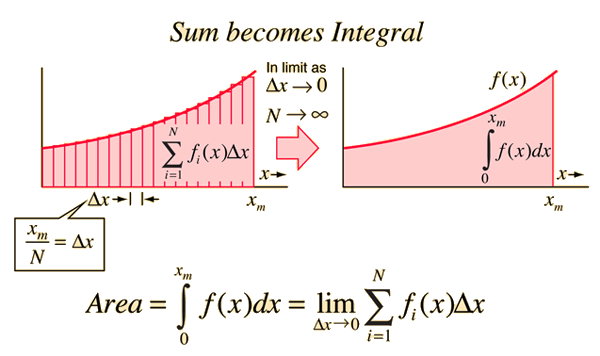

class: inverse, middle, center # Continuous Random Variables --- .left-column[ ## Preliminaries ] .right-column[ # Integrals .center[Today, we'll have to use integrals.] ] --- count:false class:inverse, middle, center .center[<img src=scream.jpg height=550>] --- .left-column[ ## Preliminaries ] .right-column[ # Integrals Today, we'll have to use integrals. They won't show up in the exam, but I'll ask you to do some very simple integrals in the homeworks. Without integrals, you'd missing out on a lot of probability / statistics. Here's a 2-minute crash course with everything you should know. ] --- .left-column[ ## Preliminaries ] .right-column[ # Indefinite Integrals Take a function like $f(x) = x$. You know how to take its derivative: ] -- .right-column[ $$\frac{d}{dx}f(x) = 1$$ ] -- .right-column[ Integration is the inverse operation: *What functions have derivative equal to 1?* ] -- .right-column[ Any function of the kind $f(x) = x + c$, for constant $c$. $$\frac{d}{dx}f(x) = \frac{d}{dx}(x + c) = 1 + 0 = 1$$ ] --- .left-column[ ## Preliminaries ] .right-column[ # Indefinite Integrals Now take the function $f(x) = x$. *What functions have derivative equal to x?* ] -- .right-column[ Any function of the kind $f(x) = \frac{x^2}{2} + c$, for constant $c$. $$\frac{d}{dx}f(x) = \frac{d}{dx}\left(\frac{x^2}{2} + c\right) = x + 0 = x$$ ] --- .left-column[ ## Preliminaries ] .right-column[ # Indefinite Integrals Last one $f(x) = e^{x}$. *What functions have derivative equal to $e^x$?* ] -- .right-column[ Any function of the kind $f(x) = e^x + c$, for constant $c$. $$\frac{d}{dx}f(x) = \frac{d}{dx}\left(e^x + c\right) = e^x + 0 = e^x$$ ] --- .left-column[ ## Preliminaries ] .right-column[ # Indefinite Integrals We write this operation like this: $$F(x) = \int f(x) \ dx$$ ] -- Examples: .right-column[ $$\int 1 \ dx = x + c$$ ] -- .right-column[ $$\int x \ dx = \frac{x^2}{2} + c$$ ] -- .right-column[ $$\int e^x \ dx = e^x + c$$ ] --- .left-column[ ## Preliminaries ] .right-column[ # Definite Integrals When we want to find the area under $f(x)$, .center[<img src="integral.svg" height = 300>] we write it like this $$Area = \int_{a}^{b} f(x) \ dx$$ ] --- .left-column[ ## Preliminaries ] .right-column[ # Definite Integrals By something called the Fundamental Theorem of Calculus, $$Area = \int_{a}^{b} f(x) \ dx = F(b) - F(a)$$ That is: 1. Find the function whose derivative is $f(x)$ 2. Evaluate it at $a$ and at $b$ 3. Subtract ] --- .left-column[ ## Preliminaries ] .right-column[ # Definite Integrals Let's see the area under $f(x) = 1$ between 3 and 4. <br><br> We saw that $F(x) = x + c$ <br><br> Evaluate at $3$: $F(3) = 3 + c$ <br><br> Evaluate at $4$: $F(4) = 4 + c$ <br><br> Subtract: $F(4) - F(3) = 4 - 3 + c - c = 1$ <br><br> .center[(The constants always cancel out)] ] --- .left-column[ ## Preliminaries ] .right-column[ # Definite Integrals Let's see the area under $f(x) = x$ between 0 and 1. <br><br> We saw that $F(x) = \frac{x^2}{2} + c$ <br><br> Evaluate at $1$: $F(1) = \frac{1^2}{2} + c$ <br><br> Evaluate at $0$: $F(0) = \frac{0^2}{2} + c$ <br><br> Subtract: $F(1) - F(0) = \frac{1}{2} - 0 + c - c = \frac{1}{2}$ <br><br> ] --- .left-column[ ## Preliminaries ] .right-column[ # Definite Integrals Let's see the area under $f(x) = e^x$ between 0 and 1. <br><br> We saw that $F(x) = e^x + c$ <br><br> Evaluate at $1$: $F(1) = e^1 + c$ <br><br> Evaluate at $0$: $F(0) = e^0 + c$ <br><br> Subtract: $F(1) - F(0) = e^1 - 1 + c - c = e - 1$ <br><br> ] -- .right-column[ An integral that has been evaluated at some endpoints is called a <b>definite integral</b>. ] --- .left-column[ ## Preliminaries ] .right-column[ # Definite Integrals  We're dividing the regions into thin rectangles of width $dx$ and height $f(x)$, then summing the areas of each rectangle. ] --- .left-column[ ## Preliminaries ## Problem ] .right-column[ ## What do you think about this? Suppose we can randomly generate uniformly-distribted real numbers in the interval [0,1]. Guess the probability that the generated number will be: ] -- .right-column[ + Smaller than $0.5$? ] -- .right-column[ + Larger than $0.8$? ] -- .right-column[ + Smaller than $1$? ] -- .right-column[ + Between $0.2$ and $0.6$? ] --- .left-column[ ## Preliminaries ## Problem ] .right-column[ ## What do you think about this? In all of these cases, we asked for the probability of a number in a range $[a,b]$. <font size=6> $$P(a \leq X \leq b)$$ </font> ] -- .right-column[ But what would happen if we wanted a specific number: <font size=6> $$P(X = 0.721345)$$ </font> <br> Let's see what's the issue. ] --- .left-column[ ## Preliminaries ## Problem ] .right-column[ ## What do you think about this? Any number in the range is <i>possible</i>, so we'd like to give them all positive probability. .center[<img src="oprah.jpg" height = 300>] ] --- .left-column[ ## Preliminaries ## Problem ] .right-column[ ## What do you think about this? Start with a Discrete Uniform with few points. .center[<img src="supp3.png" height = 300>] ] --- .left-column[ ## Preliminaries ## Problem ] .right-column[ ## What do you think about this? What happens as we increase the number of points? .center[<img src="supp5.png" height = 300>] ] --- .left-column[ ## Preliminaries ## Problem ] .right-column[ ## What to do with this RV? What happens as we increase the number of points? .center[<img src="supp10.png" height = 300>] ] --- .left-column[ ## Preliminaries ## Problem ] .right-column[ ## What to do with this RV? What happens as we increase the number of points? .center[<img src="supp25.png" height = 300>] .center[Every single outcome has probability zero!<br><br> $P(X = x) = 0<br>$] ] --- .left-column[ ## Preliminaries ## Problem ## Solution ] .right-column[ ## Solving the puzzle The solution is to invent a new tool. The <b>probability density function</b>, or <b>PDF</b>, of a random variable $X$ is the function whose <i>area under the curve</i> gives the probability of $X$: ] -- .right-column[ <font size=6> $$P(a \leq X \leq b) = \int_{a}^{b} f_X(x) \ dx $$ </font> ] --- .left-column[ ## Preliminaries ## Problem ## Solution ## Densities ] .right-column[ ## Densities The pdf of the <b>continuous uniform distribution</b> looks like this: <img src="u1.png" width = 600> ] --- .left-column[ ## Preliminaries ## Problem ## Solution ## Densities ] .right-column[ ## Densities <img src="u2.png" width = 600> $$P(a \leq X \leq b) = \int_a^b f_X(x )dx$$ ] --- .left-column[ ## Preliminaries ## Problem ## Solution ## Densities ] .right-column[ ## Densities <img src="u2.png" width = 600> $$P(0.4 < X \leq 0.6) = \int_{0.4}^{0.6} 1 dx 0.2$$ ] --- .left-column[ ## Preliminaries ## Problem ## Solution ## Densities ## Properties ] .right-column[ ## Properties of PDFs **Densities** are not the same as **probability mass**. <br> They *must* satisfy: .center[<img src="densities.png" height = 200>] <br> But they need *not* be between 0 and 1! (Examples?) ] --- .left-column[ ## Preliminaries ## Problem ## Solution ## Densities ## Properties ## CDFs ] .right-column[ ## Cumulative distribution functions CDFs can be defined just as in the discrete case: <img src="pmf_cdf.png" height = 300> .center[<img src="fmla1.png" height = 80>] .center[(CDF is cumulative sum of PMF values)] ] --- .left-column[ ## Preliminaries ## Problem ## Solution ## Uniform ## Properties ## CDFs ] .right-column[ ## Cumulative distribution functions CDFs can be defined just as in the discrete case: <img src="pdf_cdf.png" height = 300> .center[<img src="fmla2.png" height = 80>] .center[(CDF is cumulative "sum" of PDF values)] ] --- .left-column[ ## Preliminaries ## Problem ## Solution ## Uniform ## Properties ## CDFs ## Mean ] .right-column[ ## Expectation Expectations also work in analogy to the discrete case. <img src="analogy.png" height = 100> .center[(Expectation is 'sum' of outcomes times probabilities)] ] --- .left-column[ ## Preliminaries ## Problem ## Solution ## Uniform ## Properties ## CDFs ## Mean ] .right-column[ ## Expectation Example: average of $X \sim Uniform[0, 2]$<font color="red">*</font> .footnote[<font color="red">*</font><font size=2>From now on, <i>Uniform</i> means the <i>Continuous Uniform</i></font>] PDF: $f(x) = \frac{1}{2}$ $E[X] = \int_a^b x \cdot f(x) dx $ ] -- .right-column[ $E[X] = \int_0^2 x \cdot \frac{1}{2} dx $ ] -- (Function whose derivative is $\frac{x}{2}$ is: $\frac{x^2}{4}$) -- .right-column[ $E[X] = \frac{2^2}{4} - \frac{0^2}{4} = 1$ ] --- class: inverse, middle, center ## Common Continuous Distributions --- .left-column[ ## Uniform ] .right-column[ ## Continuous Uniform Distribution <img src="unif_pdf.svg" height = 300> Frequently denoted by $Unif[a,b]$ Parameters are the interval endpoints $a$, $b$. $$f(x) = \frac{1}{b-a} \qquad F(x) = \frac{x}{b-a}$$ ] --- .left-column[ ## Uniform ] .right-column[ ## Continuous Uniform Distribution <img src="unif_cdf.svg" height = 300> Frequently denoted by $Unif[a,b]$ Parameters are the interval endpoints $a$, $b$. $$f(x) = \frac{1}{b-a} \qquad F(x) = \frac{x}{b-a}$$ ] --- .left-column[ ## Uniform ## Exponential ] .right-column[ ## Exponential Distribution <img src="expo_pdf.svg" height = 300> Frequently denoted by $Expo(\lambda)$ Continuous analog of Geometric. Frequently used for waiting times. $$f(x) = \lambda e^{-\lambda x} \qquad F(x) = 1- e^{-\lambda x}$$ ] --- .left-column[ ## Uniform ## Exponential ] .right-column[ ## Exponential Distribution <img src="expo_cdf.svg" height = 300> Frequently denoted by $Expo(\lambda)$ Continuous analog of Geometric. Frequently used for waiting times. $$f(x) = \lambda e^{-\lambda x} \qquad F(x) = 1- e^{-\lambda x}$$ ] --- .left-column[ ## Uniform ## Exponential ## Normal ] .right-column[ ## Normal Distribution <img src="norm_pdf.svg" height = 300> Frequently denoted by $Normal(\mu, \sigma^2)$ Parameter $\mu$ governs the center of the distribution, $\sigma^2$ controls spread. $$f(x) = \frac{1}{\sqrt{2\pi\sigma^2}}e^{-\frac{(x - \mu)^2}{2\sigma^2}} \qquad F(x) = \text{Don't worry about it} $$ ] --- .left-column[ ## Uniform ## Exponential ## Normal ] .right-column[ ## Normal Distribution <img src="norm_cdf.svg" height = 300> You'll see this a million times in connection with the limit theorem we'll study next module. $$f(x) = \frac{1}{\sqrt{2\pi\sigma^2}}e^{-\frac{(x - \mu)^2}{2\sigma^2}} \qquad F(x) = \text{Don't worry about it} $$ ] --- .left-column[ ## Uniform ## Exponential ## Normal ## Chi-squared ] .right-column[ ## Chi-squared <img src="chi2_pdf.svg" height = 300> The distribution of the sum of $n$ squared Normal random variables is the Chi-square "with $n$ degrees of freedom". <img src="fmla3.png" width = 500> ] --- .left-column[ ## Uniform ## Exponential ## Normal ## Chi-squared ] .right-column[ ## Chi-squared <img src="chi2_cdf.svg" height = 300> The distribution of the sum of $n$ squared Normal random variables is the Chi-square "with $n$ degrees of freedom". <img src="fmla3.png" width = 500> ] --- .left-column[ ## Uniform ## Exponential ## Normal ## Chi-squared ## Student-t ] .right-column[ ## Student-t (or just "t") <img src="t_pdf.svg" height = 300> <font size=3> Here's how it's defined. If $X \sim Normal(0,1)$ and $Y \sim \chi_{\nu}^2$, and $X$ and $Y$ are independent, then $$\frac{X}{\sqrt{\frac{Y}{\nu}}} \sim t_{\nu}$$ that is, the resulting ratio is said to have the <i>Student-t distribution with $\nu$ degrees of freedom</i>. </font> <img src="fmla4.png" width = 600> ] --- .left-column[ ## Uniform ## Exponential ## Normal ## Chi-squared ## Student-t ] .right-column[ ## Student-t (or just "t") <img src="t_cdf.svg" height = 300> The Student-t distribution is also bell-shaped, but exhibits "fatter tails" than the Normal. As the parameter $\nu$ ("degrees of freedom") goes to infinity, the tails become thinner and the distribution converges to the $Normal(0,1)$ distribution. <font size=3> </font> ] --- .left-column[ ## Uniform ## Exponential ## Normal ## Chi-squared ## Student-t ## Logistic ] .right-column[ ## Logistic <img src="logis_pdf.png" height = 300> <font size=3> Not famous because of natural phenomena, but because it's used in <b>logistic regression</b> -- a technique use to predict the probabilities of 0/1 events. </font> $$f(x) = \frac{1}{\sigma}\frac{e^{-\frac{x - \mu}{\sigma}}}{(1 + e^{-\frac{x - \mu}{\sigma}})^2}$$ ] --- .left-column[ ## Uniform ## Exponential ## Normal ## Chi-squared ## Student-t ## Logistic ] .right-column[ ## Logistic <img src="logis_cdf.png" height = 300> <font size=3> Not famous because of natural phenomena, but because it's used in <b>logistic regression</b> -- a technique use to predict the probabilities of 0/1 events. </font> $$F(x) = \frac{1}{1 + e^{-\frac{x - \mu}{\sigma}}}$$ ] --- .left-column[ ## Uniform ## Exponential ## Normal ## Chi-squared ## Student-t ## Logistic ## Other ] .right-column[ ## Other univariate distributions <font size=2>.red[*] Not required by this course</font> ### Gamma It turns out that Exponential and Chi-squared are special cases of this distribution. Used to model positive real values. ### Beta Used to model values in the unit interval $[0,1]$. ### F (or Fisher-Snedecor) It's the distribution of the ratio between two Chi-squared rvs. Show up because of the *F-test*, that you'll learn about next semester. ....and <a href="http://www.math.wm.edu/~leemis/chart/UDR/UDR.html">many more!</a> ] --- class: inverse, middle, center ## Quick checks --- ## Quick checks <b>What is the probability density function of an rv $X$?</b> <font size=2>It's the function whose area under the curve between an interval $[a,b]$ equals the probability of the random variable outcome falling into that interval. In symbols, it's the function $f$ such that $\int_{a}^{b} = P(a \leq X \leq b)$ for any $a,b$.</font> <b>Is the density the same as probability?</b> <font size=2>No. Although it's a nonnegative quantity whose total area is one, the density is <i>not</i> a probability. It could even be larger than one, as in the case of a $Unif[0, \frac{1}{2}]$ distribution.</font> <b>What are the most important named distributions?</b> <font size=2>Exponential (used for waiting times), Normal (arises in connection with the Central Limit Theorem), and Student-t and Chi-squared (show up in the context of Hypothesis Testing). There's actually others, but we'll focus on these for now.</font> <b>What is the PDF of (say) the Student-t distribution?</b> <font size=2>Most people don't memorize these PDFs. All the information can be found in Wikipedia! But it's very useful to know how the distributions relate to each other (i.e., "sum of squared Normals is Chi-squared", and "Ratio of Normal and Chi-Squared is T". This sort of thing.</font>